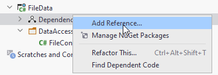
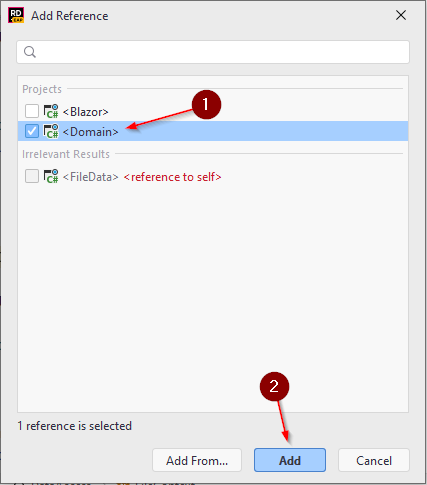
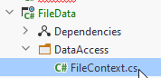

- 1 Introduction
- 2 New solution
- 3 Project structure
- 4 Domain component
- 5 Model classes
- 6 More components
- 7 Blazor component
- 8 File data component
- 9 File context
- 10 Data access interfaces
- 11 Data access implementation
- 12 Adding services
Introduction

This tutorial will initially introduce you to Blazor-server. You will create a web app to manage todo items. You can consider it a very simple Trello clone.
You will create basic features, such as
- creating a Todo
- viewing all
- searching
- modifying
- deleting
Initially the data will be saved in a file, as json format.
In later sessions, we will expand upon the tutorial, changing it to a client server system using REST, and lastly adding a real database, using Entity Framework Core (EFC).
The entire collection of Todo tutorials aim to perfectly prepare you for the exam.
All source code will be on GitHub, so you always have a reference, if you're stuck.
Find it here App On GitHub
Different parts of the tutorial in the future, will be in different branches:

Creating a new solution
For previous exercises, you have most likely put them all in the same solution, and created a new project for each exercise.
This tutorial will be a slightly larger exercise, perhaps sort of a mini-SEP. As such, we wish to have a better code-structure for our application. You have been taught the SOLID design principles. They usually apply to single methods, or classes. In this project we will attempt to apply Clean Architecture, which is basically applying the SOLID principles on a larger scale.
Therefore, we're going to need a new, empty solution. You can name it TodoApp.
Follow the steps below to create a new solution:

Clicking New... will open the dialog for creating a new solution, see below.
- Select Empty Solution
- Give your solution a name. I have multiple Todo apps by now, so I have called mine BlazorTodoApp
- You can choose to add a git repository, if you wish.

Your new empty solution should now look like this:

I.e. it's pretty empty. Next up, we will talk about the solution structure.
Project structure
You have previously heard about layered systems on second semester, a simple example could look like this:

The above would be a basic structure for a local desktop app, e.g. SEP1, roughly sketched.
In SEP2 you expanded to a client/server system, using JFX. Such a system could be illustrated in a layared diagram like below:

The same approach applies: Layers have different responsibilites, and each layer is separated by interfaces. In SEP2 you probably divided layers into different packages. The next step is to separate into components. In Java it's called a module, in .NET it's called a project. Components can be considered a bit like lego-building blocks, with the intention that you used these blocks til construct the system. They provide modularity, so building-blocks can easily be swapped out.
This means your .NET app will be structured using an approach like below, roughly sketched. Notice that some "packages" have a little upside-down two-pronged fork above the name. This indicates a "sub-system" in Astah, we use it to represent components/projects/modules. Inside each, you can have packages. Inside packages, you find interfaces and classes.

This could be an example of your entire solution, at the end of the semester. You will probably have these 6 components:
- Blazor - The UI. It will depend on interfaces in the Domain
- Domain - Holds domain model classes, and certain central interfaces. Potentially custom exceptions, but probably not in our case
- FileData - Implements interface from Domain. Will provide functionality to store data in a file
- HttpServices - Will contain client classes, which can contact a server
- WebAPI - This is the server
- DataAccess - Similar to FileData, but data will be stored in a database
The first tutorial will cover 1, 2, and 3. We will then expand later with 4 and 5. Then lastly 6.
In this first part we will start with Blazor, Domain and FileData. You may notice there is no component for business logic, simply because this app is rather simple. We are also going to put most interfaces into the Domain.Interfaces. This is also a simplified approach.
In your SEP3 you're going to need a component for logic. Sometimes this component is called Application.
The point is that these projects (components) are separated, each handling their own responsibilities. It will feel like overkill in this tutorial, because each component will be pretty small, containing only a handful of classes. But this is just practice.
There are different approaches on how to structure these components. We will do by layer, because that is simpler. However, in your professional career, you will probably encounter a separation by feature. This is an often recommended approach, however much more complicated.
This may seem a bit overwhelming, but we will take it step by step, holding hands along the way. You will be safe. No worries.

The Domain component
First, we need the model classes. In this first iteration of the tutorial, we will just need a Todo object. Later we will add Users.
New project (component)
Create a new Library project, by right-clicking your solution:

This will open a familiar dialog, where you can create a Class Library (1). Give the project a name (2), I have called mine Domain, in some examples it is called Entities. In your case, you can probably only select net6.0 (3). Finally press Create (4).

A Class Library is a type of project which cannot be run, it instead contains functionality. All NuGet packages are generally libraries with functionality, you can import into your system. Similar to Jar files in Java.
Your Domain component will just contain the domain model classes, there is nothing to run. If you make custom Exceptions, they could also go here. We will also add certain interfaces, shortly.
This component will contain things that are needed across the application.
Todo model class
You can start by deleting the default class that comes with the project: Class1.cs.
Inside your Domain project, create a new directory, name it Models. In here we put the model classes.
Create a new class, call it Todo:

The Todo class needs properties for the data, a Todo should hold:
public class Todo
{
public int Id { get; set; }
public int OwnerId { get; set; }
public string Title { get; set; }
public bool IsCompleted { get; set; }
public Todo(int ownerId, string title)
{
OwnerId = ownerId;
Title = title;
}
}
We have created a constructor, which only takes two of the four properties as arguments. The intention is that the Id should be set automatically by whatever class persists the data, and you cannot create a Todo, which is initially already completed.
We might consider adding a feature of reassigning todos to other users. At a later point.
A tale of three components
We are going to need two more components for this first part of the tutorial: a Blazor-server component, and another component to save data to a file. The relationship between the components will be like below:

Both Blazor and FileData knows about Domain, but neither knows about the other. Because of this separation, we can at a later point easily swap out which implementation of ITodoHome Blazor uses. Initially it will be the file storage functionality, but later it will be a client, which contacts a server.
There is a small detail that we will have to require Blazor to know about the FileData component, that cannot be avoided, but it will have a microscopic impact, and it is still very easy to remove FileData, and input something else. We'll get back to this later.
Creating blazor-server component
First, we create the blazor-server component. Right-click your solution folder again, to add a new project:
- ASP.NET contains everything web, within .NET
- Give your project a name
- Select the type. There is also something called Blazor wasm. But we use Blazor Server
- No authentication, we will create our own later
- No docker support
- Create the project
Wonderful.
We will leave the component for now, and move on to data access.
File data component
Create a new project again, this time a library:

Again, delete the Class1.cs.
We then need to add dependencies to other components, so that the FileData component can use classes from other components. Inside the FileData component, right-click the Dependencies:

Then select the Domain component.

This means your FileData component can now access namespaces and classes in the Domain component.
FileContext
We will now create the class, which can save and retrieve data. We will be serializing objects to JSON, and write to a file. It's a pretty simple substitute for a database.
Inside the FileData component: Create a new directory, DataAccess.
Inside this directory, create a new class, call it FileContext:

Below, the content of the FileContext will be explained. The final version of the class can be found here
Fields
You need to define the file, which should hold the data. And we need a collection of Todo objects:
private string todoFilePath = "todos.json";
private ICollection<Todo> todos;
We use a collection, because this class should not have get-methods to access objects at an index. This is to simulate how you will work with a database in the future.
Constructor
Then we need a constructor. We wish to insert some dummy data into the file, if nothing exists, just so we have something to work with. The constructor looks like this:
public FileContext()
{
if (!File.Exists(todoFilePath))
{
Seed();
}
}
What's going on?
Lines:
3 Here we check if there is already a file at the given path.
5 If there's no file, we call the Seed()method. This will be implemented shortly. Its purpose is to insert dummy data.
We now need the Seed() method. It looks like this:
private void Seed()
{
Todo[] ts = {
new Todo(1, "Dishes") {
Id = 1,
},
new Todo(1, "Walk the dog") {
Id = 1,
},
new Todo(2, "Do DNP homework") {
Id = 3,
},
new Todo(3, "Eat breakfast") {
Id = 4,
},
new Todo(4, "Mow lawn") {
Id = 5,
},
};
todos = ts.ToList();
SaveChanges();
}
In the above method an array of Todos are created. Notice here, we manually set the Id of each todo. We only do this for this specific dummy data.
In the end the array is stored in the todos field variable. And then we call a currently-non-existing method, SaveChanges.
Save changes
The purpose of this method is to take the content of the todos field, and put into the file.
public void SaveChanges()
{
string serialize = JsonSerializer.Serialize(todos);
File.WriteAllText(todoFilePath,serialize);
}
Later, when we work with databases through Entity Framework Core, you will also need to call SaveChanges after interacting with the database. So, we practice the workflow here.
Load data
We need a method to read from the file, so we can retrieve data.
private void LoadData()
{
string content = File.ReadAllText(todoFilePath);
todos = JsonSerializer.Deserialize<List<Todo>>(content);
}
What's going on here?
The method is private, because this class should be responsible for determining when to load data.
We read all the content of the file, it returns a string.
Then that string is deserialized into a List<Todo>, and assigned to the field variable.
Accessing data
Finally, we need a way to actually get the data. We'll make a property, not a get-method. This is, again, to simulate the way you'll interact with the database in the future.
public ICollection<Todo> Todos
{
get
{
LoadData();
return todos;
}
}
Here, whenever someone wants to get the collection of Todos, they will call the Todos property. This will call LoadData() to instantiate the collection, and then return it.
The next step will be to add a Data Access Object with the usual CRUD operations.
The final version of the class can be found here
Data access interfaces
As mentioned previously, our Blazor app will initially get data from the just created FileContext. Later we wish to change this, so the data comes from a server. I.e. we wish to swap out the implementation of these interfaces.
In order to not have to change the dependencies of the Blazor component, we put the interfaces in the Domain component. It will eventually look something like this:

We currently have the Blazor, Domain, and FileData components. In a later tutorial, we will expand with the HttpServices component. At that point, we wish to swap out which implementation the Blazor component uses.
Because we have applied the dependency inversion principle, it should be little work to swap from using file storage, to using a client to get data from a server.
But first, we need to define the interface.
ITodoService
Inside the Domain component, create a new directory. I have called mine "Contracts". "Interfaces" imply the same thing. But interfaces are essentially a contract between two classes: Class A, which needs some functionality, and Class B which provides some functionality. The interface is then a Contract, so class B knows what functionality to deliver, and Class A knows what functionality it will get.
Inside the Contracts directory, create a new interface, ITodoHome:
using System.Collections.Generic;
using System.Threading.Tasks;
namespace Blazor.Services;
public interface ITodoHome
{
public Task<ICollection<Todo>> GetAsync();
public Task<Todo> GetById(int id);
public Task<Todo> AddAsync(Todo todo);
public Task DeleteAsync(int id);
public Task UpdateAsync(Todo todo);
}
We are using asynchronous programming, so all methods returns a Task, and method names are suffixed 'Async'.
We have here the standard CRUD operations. Notice how the AddAsync method returns a Todo object. This is because the Todo object is finalized when storing it, i.e. it gets an Id assigned from the FileData component, at some later point. We return it, so the finalized object can be displayed to the user, should we want to.
Next up, we need the adapters to let the Blazor app get data from the FileContext. These are our Data Access Objects.
Data Access Object
We currently only have one type of domain object, so we just need a single DAO to provide CRUD operations on Todos.
The finished class is found here.
This DAO should be located in the FileData component, either put it in the DataAccess directory or create a new.

This class should implement the ITodoHome interface from the Domain component, and provide implementations for the
methods.
First, we need a FileContext. We will just get and assign this in the constructor:
public class TodoFileDAO : ITodoService
{
private FileContext fileContext;
public TodoFileDAO(FileContext fileContext)
{
this.fileContext = fileContext;
}
// ...
We use constructor dependency injection for the FileContext, so we don't have to manually create a new instance. This is generally a good approach. Remember SDJ2 and MVVM: Controllers, VMs, and Models got what they needed through constructors. We will get the framework to handle this dependency injection for us.
Getting all todos
We'll start with the GetAsync() method:
public async Task<ICollection<Todo>> GetAsync()
{
ICollection<Todo> todos = fileContext.Todos;
return todos;
}
Here we just retrieve the Todos from the fileContext, and return the collection. The method is marked async, even though we don't have any asynchronous code here.
This is future proofing, because when we change to retrieving data from a server, that will be asynchronous.
Get todo by id
This method should return a Todo by its id:
public async Task<Todo> GetById(int id)
{
return fileContext.Todos.First(t => t.Id == id);
}
The First() method takes a predicate and returns the first Todo, which matches the criteria. We know the Id is unique, so there should be no problems here.
Add Todo
In this method we need to implement the functionality of auto-setting the Id of the provided Todo item. The method looks like this:
public async Task<Todo> AddAsync(Todo todo)
{
int largestId = fileContext.Todos.Max(t => t.Id);
int nextId = largestId + 1;
todo.Id = nextId;
fileContext.Todos.Add(todo);
fileContext.SaveChanges();
return todo;
}
First, we use the Max(...) method to find the largest value of Id in the collection.
Then we create the new Id, by incrementing the current largest Id by 1.
We assign that Id to the provided todo.
We add the todo to the fileContext.
We call SaveChanges() so that the Todos are written to the file.
Finally, we return the finalized todo object, now with a correct Id.
The other methods
Give the other methods a try on your own, and look up the solution on GitHub (link at the top) if needed.
DeleteAsync: Remove a todo from the collection of todos, based on the given id, in the fileContext, remember to call SaveChangesAsync
UpdateAsync: First find the existing Todo, by using todo.Id. Take the OwnerId and IsCompleted from the argument, and overwrite the values of the Todo from the fileContext. Then call SaveChanges()
Adding services
Now that we have our data persistence in place, we are ready to start working on the Blazor side of things.
Managing component dependencies
The first step is to make sure that our Blazor app knows about our ITodoHome, and TodoFileDAO so that we can use it to persist data.
Now, in the Program.cs class of the Blazor component, we can register services, so that the framework can create these as needed, and inject into whatever class needs a given service. This is the dependency injection, the Blazor framework can handle this automatically for us. That's pretty nifty. It makes it easier to retain loose coupling.
We encounter a problem here. In order to register a service of type FileContext and TodoFileDAO, the Blazor component must know about the FileData component.
This is the minor hiccup, I mentioned earlier. In order to reference classes from FileData, Blazor must know about FileData.
We would have liked to avoid this knowledge, but it is only the Program.cs class which will be "tainted" like this, and that's okay.
We need a dependency from Blazor to FileData:

Adding the services
Then, in Program.cs we need to add services. It goes like this:

Now, whenever a page request a class, which has been added as a service, the framework will create that for us. If we request a class, which hasn't been added, the framework will give an error, saying it was unable to create the requested service.
Notice we use AddScoped, this is a good default approach. Adding a singleton can sometimes cause problems, if you are not careful.
With the line
builder.Services.AddScoped<ITodoHome, TodoFileDAO>();
we are saying, that whenever the blazor app requests an instance of ITodoHome, it will get a TodoFileDAO. In the future, when we wish to provide a different implementation, we just need to change this single line of code, and our entire app will get data from a server somewhere, instead of a file.
Multithreading problem?
In our case here, we could potentially have two clients, who wishes to create Todo items at the same time,
cause two different instances of FileContext to attempt to write to the same file. That will cause an error.
We could use a singleton and synchronize the FileContext class to make it thread safe,
but that's out of scope of this exercise, given that the FileContext is just temporary.